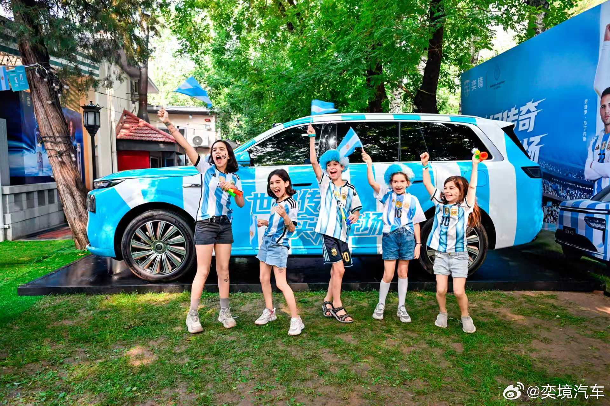
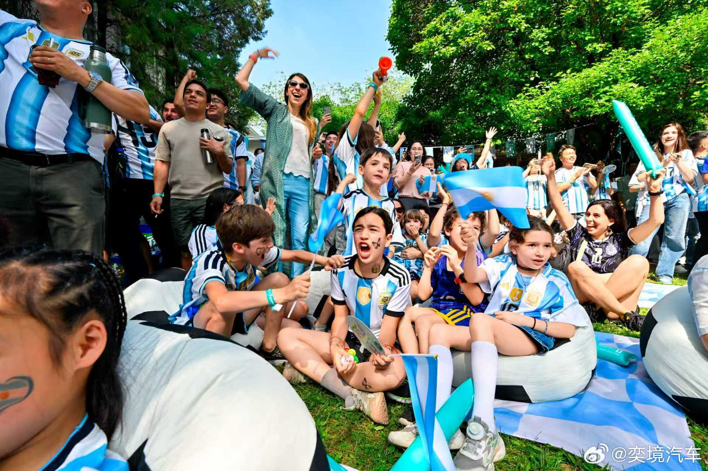
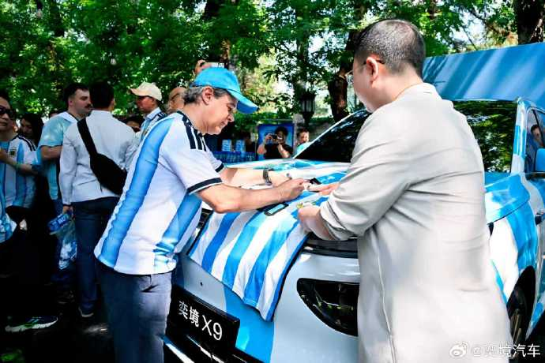
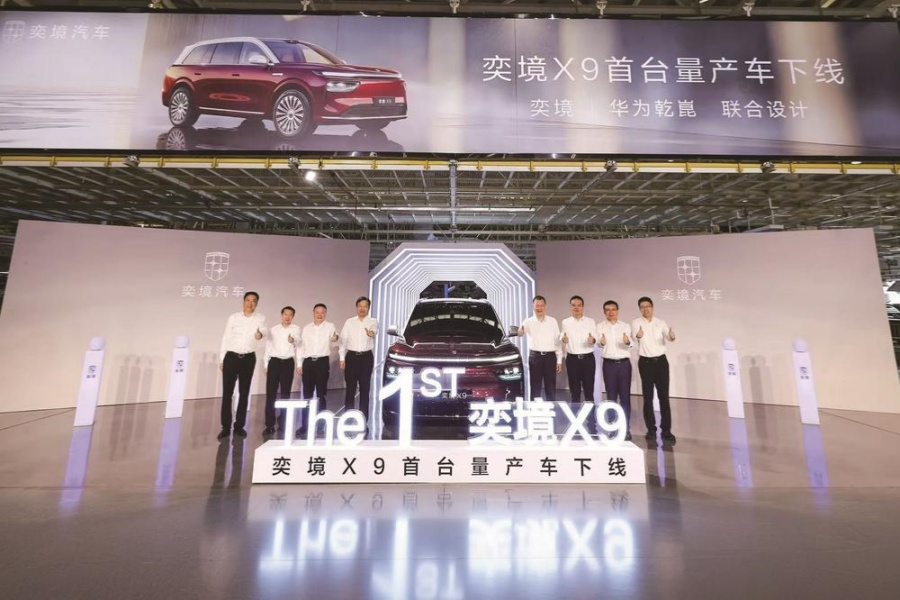

案例发生了什么

奕境不是在世界杯开幕前一个月官宣，而是在 6 月 15 日开赛后完成对外发布。更早的 6 月 10 日，东风采购平台已经公开“2026 年奕境赞助阿根廷国家足球队合作项目”，写明授权代理链、人群匹配、球队调性与赛事话题是选择依据。两天后，奕境把蓝白涂装 X9 开进阿根廷驻华大使馆组织观赛。7 月 8 日，品牌总经理曾清林在官方认证账号提出：从对阵埃及开始，阿根廷每进一球就送一辆车；汽车媒体随后将权益解释为 X9 一年使用权，并在半决赛后统计为累计 8 台。由于目前未取得完整规则、中奖名单和交付记录，本页将“8 台”记为待官方闭环的活动口径，而不是已经完成的履约事实。
它解决的策略问题
这页要回答的不是“奕境汽车 × 阿根廷队：「进一球送 X9」 是否参与世界杯”，而是它如何通过“阿根廷国家队中国区合作 / 赛果触发福利 / 使馆观赛”回应“把每次进球变成车辆使用权福利的重复触发点，并让球队情绪承接新品上市节奏”这一业务问题。
资源如何变成行动
阿根廷国家队中国区合作 / 赛果触发福利 / 使馆观赛
围绕“把每次进球变成车辆使用权福利的重复触发点，并让球队情绪承接新品上市节奏”配置球星、球队、授权、商品、渠道或海外服务，而不是只做单一海报。
根据品类落在门店、货架、礼赠、家庭观赛、出行或海外本地市场的具体触点。
通过收藏、复购、线索、渠道或交付案例，决定这项资源能否留下来。
动作拆解
- 先用阿根廷国家队中国区合作身份取得球队资产，并把选择理由提前写进采购公示：目标人群、冠军气质与赛期话题都可追溯，而不只靠官宣后的品牌话术解释。
- 在阿根廷驻华大使馆设置蓝白涂装 X9、球员背景板和集体观赛，把签约关系从一张 KV 转成可拍摄、可体验的真实线下场景。
- 用“每进一球送一辆车”替代“猜冠军抽大奖”：福利随比赛过程重复触发，品牌可以在每次进球后再传播；但一年使用权、抽奖资格、车辆交付与保险责任必须由完整规则兜底。
- 球队获得亚军后，品牌总经理仍以“永不言弃、全力以赴”继续回应；同一北京时间 7 月 20 日，东风官网确认 X9 首台量产车在成都下线，使赛事情绪与产品量产形成时间上的承接，但现有证据不能证明两者日期是预先设计。
- “阿梅境（Amazing）”、AI 用车视频和 AIGC 共创目前主要见于行业复盘，尚未取得奕境官方原帖与完整片，因此只作为待归档线索，不写成已经核实的核心动作。
深度补充：从动作到复盘
以下字段用于把案例从“看过一个创意”推进到可执行、可衡量、可继续补证的研究对象。
把球队每次进球变成可重复触发的车辆使用权福利，并用使馆观赛现场承接产品体验
阿根廷队中国球迷、家庭 SUV 潜客、科技汽车人群与世界杯观众
国家队中国区合作 / 赛果触发福利 / 线下观赛
球队权益、官方微博、使馆观赛、蓝白涂装展车、赛果海报与抽奖福利
规则参与、有效线索、试驾、品牌搜索、中奖履约与后续预售转化
赛果营销可以绑定过程高光而非只赌冠军，但承诺必须用完整规则、抽奖记录与实际交付闭环。
补齐 奕境汽车 × 阿根廷队：「进一球送 X9」 的官方首帧、完整片、发布时间、市场范围与执行现场，并保留原始链接。
传播与业务机制
国际赛事提供公共话题，中国品牌需要用明确的本土产品语言或海外市场语言完成翻译。
低门槛商品、互动、内容或线下体验负责让泛球迷也有参与理由。
真正的回报通常发生在商品、渠道、服务或海外市场，而不只在国内声量。
需要品牌、渠道、法务、供应链与内容团队提前协调赛程和物料。
适用条件、风险与证据
- 先明确目标是国内动销、出海认知、渠道关系还是授权商品，而不是全部都做。
- 球星或球队的赛果只是放大器，必须准备常态内容和转化出口。
- 对授权范围、地域、肖像和商品库存建立可追溯台账。
品牌与权威来源物料
这里只展示可追溯到品牌、权利方、官方账号或明确注明原始出处的真实物料；研究图卡不计入案例图片。




官方资料、结果口径与下一步
已验证事实
- 东风公司采购招投标平台于 2026 年 6 月 10 日公开“奕境赞助阿根廷国家足球队合作项目”，确认采购主体、授权代理链，以及人群、调性和赛事话题三项选择理由。
- 奕境汽车官方微博的新浪留存页确认 6 月 17 日阿根廷驻华大使馆观赛活动，并留存蓝白涂装 X9、球迷观赛与现场互动共 9 张原图；本页归档其中 4 张。
- 奕境品牌总经理曾清林的官方认证微博原帖可确认 7 月 8 日提出“从与埃及比赛开始，阿根廷每进一球送一辆车”；“X9 一年使用权、累计 8 台”来自汽车媒体后续一致转述，完整官方规则仍未取得。
- 东风官网确认奕境 X9 于北京时间 7 月 20 日在成都完成首台量产车下线，并确认奕境是东风与华为乾崑全栈原生共创品牌。
可追溯结果口径
- 没有取得活动报名人数、有效线索、试驾、预售、品牌搜索增量或第三方品牌提升数据；“破圈”“最值得一提”“赢家”等定性不作为事实。
- 累计 8 台目前只能作为活动传播口径；在官方公布中奖名单、抽奖公证、车辆使用期限、保险与交付记录之前，不写成“已送出 8 台”。
原始来源
- 东风公司采购招投标平台 · 2026-06-102026 年奕境赞助阿根廷国家足球队合作项目
- 奕境汽车官方微博（新浪留存） · 2026-06-17奕境 X9 亮相阿根廷驻华大使馆
- 奕境汽车品牌总经理曾清林（新浪留存） · 2026-07-08从与埃及比赛开始，阿根廷每进一球送一辆车
- 易车 / 罗辑车评 · 2026-07-12每进 1 球送 X9 一年使用权（规则二手复盘）
- 新浪新闻 TripAuto 账号留存 · 2026-07-16半决赛后累计 8 台的媒体口径
- 东风汽车集团有限公司 · 2026-07-21东风奕境 X9 首台量产车在成都下线
- 奕境汽车官网 · 2026-08-03奕境 X9 官方产品页
来源链接优先指向品牌、权利方或持权媒体官方页面；品牌自述数据按原口径记录，不视作独立审计结果。